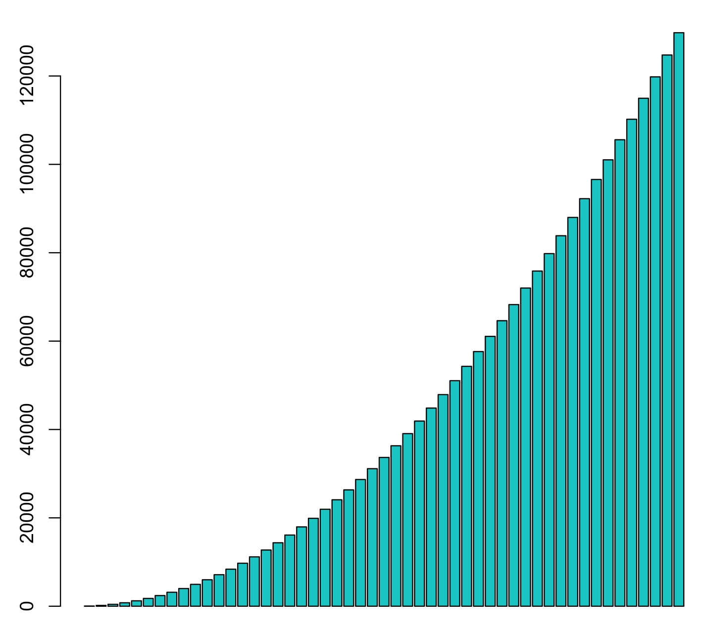

Quadtrees
First: problem
Efficient use of spatial data
Images
How can we store them efficiently?
Capturing redundancy
Compression
How can we manipulate them?
Resize
Rotations
Spatial data
What's the nearest node?
What am I colliding with?
Our meta-algorithm
Divide and conquer
How can we cut big challenges down...

...to simpler, related challenges
1d search

Big idea
- Capturing logic of our data, in our structure
e.g proximity
Unsorted
[10, 15, 4, 5, 16, 13]- Which numbers are closer than 2 apart?
Brute-force
- Compare each to each
[10, 15, 4, 5]10 vs 15, 10 vs 4, 10 vs 515 vs 4, 15 vs 54 vs 5
Why bad?
const runtime = (n, t = 0) => n
? runtime(n - 1, t += n - 1)
: t
const times = Array.from({ length: 10 },
(_, i) => runtime((i + 1) * 10))
// [45, 190, 435, 780, 1225, 1770,
2415, 3160, 4005, 4950]
Hugely longer for more nodes

Sorted
[4, 5, 10, 15, 13, 16]- Closest bigger and smaller number are neighbours
- So we can just check neighbours!
- Linear runtime
Quadtrees
4-node
- quad = 4
- tree = parent child
Why?
1D search
- Which numbers are closer than 2 apart?
2D search

- Which nodes are closer than 2 apart?
Can't index on 2D
- Distance is
sqrt(xDistance(a,b)^2 + yDistance(a,b)^2)(Pythagoras) - Can't collapse our dimension
Asking each node is costly
- Again, quadratic runtime
Divide harder
- Which nodes collide?
Into easier

Our first quadtree
Quadtrees for images
To simplify - B&W

Representing image data

Compression

How?
- We can compress the below:
{ size: 8, nodes: [0,0,1,0] }
Creating
- Compression starts happens at leaves
- Why?
Recurse up
- Is whole block on or off?
- If so, let's represent it as a boolean
- Otherwise, let's represent it as an array
One simple coding
- Nodes are arrays:
[1, [1,0,1,0], 1, 0] - Store size only at top of tree
- Order is
topLeft, topRight, bottomLeft, bottomRight
Ok
const tree = {
size: 8,
nodes: [
// top left + top right...
[
[0,1,0,1],
1,
[0,1,0,0],
[1,1,0,0],
],
Creation
- Are we at leaf? (Size = 4)
- Are all the nodes on or off?
- Return boolean
- Return Array
- Recurse to create 4 quadtrees from sub-areas
- Are all my subtrees boolean?
- Return boolean
- Return Array
- Are all the nodes on or off?
Expansion
- Is this node constant (
trueorfalse)- Fill area
- Recurse into subnodes
Challenge: stack space
Image data is large
- 800 x 600 = 480,000
JS's stack is not
- ~10,000s
We can't do simple recursion
function quadtree(imageData) {
if(imageData.length === 4) {
// compress
} else {
return quadtree([
quadtree(topLeft(imageData)),
quadtree(topRight(imageData)),
// ...
])
}
}
Solution
Make our own stack!
Recursion to stack
function quadtree(imageData) {
const stack = [() => new WorkNode(imageData)];
let node;
while(node = stack.pop) {
// replace recursion with push to stack
stack.push(new WorkNode);
}
}
Goals
Rotation
- Rotate whole tree
- Mirroring
Scaling
- Scale down image
- Scale up image (resample)
Visualisation
- Show where the tree nodes are on image
Colour!
- Support colour trees